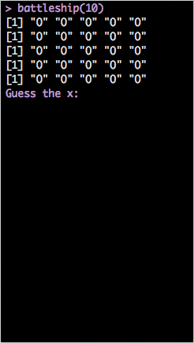
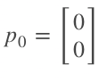

The Basic of R
Amazing R
Dboy
Taiwan R User Group for Hackers
Table of Content
Topics We Will (Might?) Cover Today
- DATA: 一切的起源
- 資料屬性
- 資料形態
- Loop
- if/else
- for
- while
- 基礎運算
- 邏輯運算
- 數值運算
- 字串處理
Define Your Own Function
- Syntex
- Scoping Rule in R
Mini Projects
- Barnsley Fern Fractal
- Little Game: Battleship
About This Course
我們希望透過直接寫 code 的方式，讓學員可以熟悉 R 的基本操作。
除了一些例子跟簡單的習題外，我們另外準備了兩個 mini project 來練習如何綜合所學到的語法。
Mini Project 1: Barnsley Fern Fractal

About This Course (Cont.)
- Mini Project 2: Battleship

Learning Pace
如果你沒什麼程式經驗，那可以跟著講解的進度一步一步來。
如果你本身已經有一些程式經驗，只是需要練習語法，強烈建議直接跳到後面去。
- 為達到最大的練習量，兩個 mini project 希望都不要使用我們提供之模板。
- 如果碰到什麼問題，基本上往前面找應該都能找到需要的方法。
- Go Go Go!!
Before We Start
It is good to have some handy commands at hands.
- rm() / ls()
- rm(list = ls()): clear all objects in Global Enviroment.
- getwd() / setwd()
- memory.size() / memory.limit(): This is for Windows user only.
- ? / ??: The helper function. (ex: ?memory.size)
- class()
- names()
Data: Where the Story Begins
DATA: 一切的起源
以資料屬性來分：
- Character (字串)
- Integer (整數)
- Numeric (雙浮點數 / 實數)
- Logical (邏輯值)
- Complex (複數)
以資料形態來分：
- 一般變數
- Vector
- Matrix (Array)
- Factor and Data Frame
基本賦值語法
(x <- "R is easy to learn!")
(y <- 3)
(z <- pi)
(k <- 1 + (0+2i))
## [1] "R is easy to learn!"
## [1] 3
## [1] 3.142
## [1] 1+2i
Logical
bol1 <- T
bol2 <- TRUE
bol3 <- F
bol1 == bol2
[1] TRUE
bol1 & bol2
[1] TRUE
bol3 | 4 > 5
[1] FALSE
Logical (續)
4 > 2
[1] TRUE
1 >= 2
[1] FALSE
"Dboy" == "Dboy"
[1] TRUE
a <- NA
a == NA # 要用 is.na(a) 才會回傳 TRUE。(另外還有 is.nan)
[1] NA
If Loop
if / else
Syntex:
if (condition_1){
#Do something here....
} else if (conditon_2){
#Do something here
} else {
#Do something here
}
Note: else if and else are optional.
If Loop (Cont.)
Exercise:
定義一個變數 value，並隨意給予一個數值。
寫個 if/else if/else 迴圈:
- 若 value > 100 或 < -100，執行 print('Extreme')。
- 若 value <= 60 且 value >= 40，執行 print('Median')。
- 其餘狀況，執行 print('Normal')
Coding Style for If Loop
以下 2 個片段的 code 是等價的，但我們最推薦第一種寫法。
value <- 5
if (value > 4) {
print("The value is greater than 4")
} else if (2 < value & value <= 4) {
print("The value is greater than 2 and no greater than 4.")
} else {
print("The value is no greater than 2.")
}
Coding Style for If Loop (Cont.)
value <- 5
{
if (value > 4)
print('The value is greater than 4')
else if (2 < value & value <= 4)
print('The value is greater than 2 and no greater than 4.')
else
print('The value is no greater than 2.')
}
- 當然，如果你是 Python 的重度愛好者，要寫成這樣我也不反對啦~(攤手)
- 我自己是覺得第一種比較好看!(自以為狀態啟動)
- 特別注意到的是，如果把 { } 去掉，程式會出錯喔!(不一定不能跑，但有可能是錯的)
For Loop
Syntex:
for (iterator){
#Do something here....
}
Example: 土炮 sum()
# 從 1 加到 10
final_result <- 0
for (i in 1:10) {
final_result <- final_result + i
}
(final_result)
## [1] 55
While Loop
Syntex:
while (condition_1){
#Do something here....
}
Example:
while (T){
handsome <- readline('Are you handsome? ')
if (handsome == 'yes'){
print('Really....!?')
} else {
print('Now we are talking.')
break
}
}
While Loop (Cont.)
Vector, Matrix, Factor and Data Frame
Funtime
mix_vec1 <- c("a", 2)
mix_vec2 <- c(2, T)
猜看看結果會如何?
(c()為 R 中建立向量的內建函式)
- [1] "a" "2"
- [1] 2 1
- Why??
Vector
c(): concatenation function
範例：
vec1 <- c(1, 2, 3)
vec2 <- c("a", "b", "c")
vector 中所有元素都必須是同一種資料屬性。
Named Vector:
Bob <- c(age = 27, height = 187, weight = 80)
Bob
## age height weight
## 27 187 80
Relating Methods (Vector)
- length():
- 語法: length(my_vec)
- 傳回 my_vect 的長度
- +, -, *, /:
- 語法: my_vec + other_vec
- 注意: R 中所有運算皆向量化。(element by element operation)
- names():
- 語法: names(my_vec)
- 傳回 my_vec 各維度的名字。
- []:
- 語法: my_vec[index]
- 傳回 my_vec 的第 index 個元素。
Examples
vec1 <- c(1, 2, 3)
vec2 <- c(4, 5, 6)
vec1 + vec2
vec1 - vec2
vec1 * vec2
vec1[1] + vec2[3]
## [1] 5 7 9
## [1] -3 -3 -3
## [1] 4 10 18
## [1] 7
Examples (Cont.)
names(Bob)
Bob["age"] # reference by name.
## [1] "age" "height" "weight"
## age
## 27
Matrix
- 語法: matrix(elements, norw, ncol, by.row = T)
- 例子:
My_matrix1 <- matrix(c(1, 2, 3, 4), 2, 2)
My_matrix2 <- matrix(c(1, 2, 3, 4), 2, 2, byrow = T)
My_matrix1
My_matrix2
## [,1] [,2]
## [1,] 1 3
## [2,] 2 4
## [,1] [,2]
## [1,] 1 2
## [2,] 3 4
Basic Operations on Matrix
- +, -, *, /
- 例子:
My_matrix1 + My_matrix2
## [,1] [,2]
## [1,] 2 5
## [2,] 5 8
My_matrix1 * My_matrix2
## [,1] [,2]
## [1,] 1 6
## [2,] 6 16
Basic Operation on Matrix (Cont.)
- %*%: Matrix Mulplication
- t(): Transpose
- 例子:
my_vec <- matrix(c(1, 2), ncol = 1) ## 為什麼不用c()?
My_matrix1 %*% my_vec
## [,1]
## [1,] 7
## [2,] 10
My_matrix1 %*% t(my_vec)
## Error: 非調和引數
Basic Operation on Matrix (Cont.)
- dim(): Dimension
- 例子:
dim(My_matrix1)
## [1] 2 2
記得常常確認矩陣的維度。
尤其是在做複雜的模型時，維度是個非常好的指標。
譬如說 Neural Network 的 back-propagation。
Factor and Data Frame
R 中有很多內建資料庫，其中包括你不可以不知道的 iris 資料庫。
用法也很簡單，只要輸入以下指令：
data(iris)
可以把 data frame 想像成以 factor 為直欄堆疊起來的資料形態。
names(iris) 將可以看到 iris 所有欄位的名字。
我說他是 factor 疊起來的東西你就信了嗎? Try it yourself!
Species <- iris[, "Species"]
class(Species) # R 會告訴你他是個 factor。
Species2 <- as.numeric(Species) # 直接把 factor 轉成 numeric 向量。
Species2
# 你覺得上面這行 code 會跑出什麼呢? 試試看吧!
Useful Function for Data Frame
給定一個名叫 data 的 data frame
names(data): 傳回 data 的所有欄位名稱。
nrow(data)/ncol(data): 傳回 data 的列 / 行數目。
head(data, n)/tail(data, n)/View(data)
which(exp)
sort/order
max/min
rbind/cbind: merge different data frames
Examples: iris
nrow(iris) # 顯示 iris 的列數
ncol(iris) # 顯示 iris 的行數
dim(iris) # 顯示 iris 的行、列數
names(iris) # 顯示 iris 的欄位名稱
## [1] 150
## [1] 5
## [1] 150 5
## [1] "Sepal.Length" "Sepal.Width" "Petal.Length" "Petal.Width"
## [5] "Species"
Examples: iris (Cont.)
head(iris, n = 10) # 顯示 iris 前 10 筆資料 (預設為 6 筆)
## Sepal.Length Sepal.Width Petal.Length Petal.Width Species
## 1 5.1 3.5 1.4 0.2 setosa
## 2 4.9 3.0 1.4 0.2 setosa
## 3 4.7 3.2 1.3 0.2 setosa
## 4 4.6 3.1 1.5 0.2 setosa
## 5 5.0 3.6 1.4 0.2 setosa
## 6 5.4 3.9 1.7 0.4 setosa
## 7 4.6 3.4 1.4 0.3 setosa
## 8 5.0 3.4 1.5 0.2 setosa
## 9 4.4 2.9 1.4 0.2 setosa
## 10 4.9 3.1 1.5 0.1 setosa
Examples: iris (Cont.)
tail(iris, n = 10) # 顯示 iris 後 10 筆資料 (預設為 6 筆)
## Sepal.Length Sepal.Width Petal.Length Petal.Width Species
## 141 6.7 3.1 5.6 2.4 virginica
## 142 6.9 3.1 5.1 2.3 virginica
## 143 5.8 2.7 5.1 1.9 virginica
## 144 6.8 3.2 5.9 2.3 virginica
## 145 6.7 3.3 5.7 2.5 virginica
## 146 6.7 3.0 5.2 2.3 virginica
## 147 6.3 2.5 5.0 1.9 virginica
## 148 6.5 3.0 5.2 2.0 virginica
## 149 6.2 3.4 5.4 2.3 virginica
## 150 5.9 3.0 5.1 1.8 virginica
Examples: iris (Cont.)
ind1 <- which(iris[, "Sepal.Length"] >= 6.5 & iris[, "Species"] == "virginica")
class(ind1)
iris1 <- iris[ind1, ]
head(iris1)
## [1] "integer"
## Sepal.Length Sepal.Width Petal.Length Petal.Width Species
## 103 7.1 3.0 5.9 2.1 virginica
## 105 6.5 3.0 5.8 2.2 virginica
## 106 7.6 3.0 6.6 2.1 virginica
## 108 7.3 2.9 6.3 1.8 virginica
## 109 6.7 2.5 5.8 1.8 virginica
## 110 7.2 3.6 6.1 2.5 virginica
Examples: iris (Cont.)
ind2 <- which(iris[, "Sepal.Length"] < 5.8 & iris[, "Species"] == "setosa")
iris2 <- iris[ind2, ]
head(iris2)
## Sepal.Length Sepal.Width Petal.Length Petal.Width Species
## 1 5.1 3.5 1.4 0.2 setosa
## 2 4.9 3.0 1.4 0.2 setosa
## 3 4.7 3.2 1.3 0.2 setosa
## 4 4.6 3.1 1.5 0.2 setosa
## 5 5.0 3.6 1.4 0.2 setosa
## 6 5.4 3.9 1.7 0.4 setosa
Examples: iris (Cont.)
iris3 <- rbind(iris1, iris2)
head(iris3)
## Sepal.Length Sepal.Width Petal.Length Petal.Width Species
## 103 7.1 3.0 5.9 2.1 virginica
## 105 6.5 3.0 5.8 2.2 virginica
## 106 7.6 3.0 6.6 2.1 virginica
## 108 7.3 2.9 6.3 1.8 virginica
## 109 6.7 2.5 5.8 1.8 virginica
## 110 7.2 3.6 6.1 2.5 virginica
Examples: iris (Cont.)
iris4 <- cbind(iris1[1:10, ], iris2[1:10, ])
head(iris4) # View(iris4)
## Sepal.Length Sepal.Width Petal.Length Petal.Width Species
## 103 7.1 3.0 5.9 2.1 virginica
## 105 6.5 3.0 5.8 2.2 virginica
## 106 7.6 3.0 6.6 2.1 virginica
## 108 7.3 2.9 6.3 1.8 virginica
## 109 6.7 2.5 5.8 1.8 virginica
## 110 7.2 3.6 6.1 2.5 virginica
## Sepal.Length Sepal.Width Petal.Length Petal.Width Species
## 103 5.1 3.5 1.4 0.2 setosa
## 105 4.9 3.0 1.4 0.2 setosa
## 106 4.7 3.2 1.3 0.2 setosa
## 108 4.6 3.1 1.5 0.2 setosa
## 109 5.0 3.6 1.4 0.2 setosa
## 110 5.4 3.9 1.7 0.4 setosa
Examples: iris (Cont.)
sort(iris[1:30, 2])
ind5 <- order(iris[, "Sepal.Length"], iris[, "Petal.Length"])
ind5[1:20]
class(ind5)
iris5 <- iris[ind5, ]
## [1] 2.9 3.0 3.0 3.0 3.0 3.1 3.1 3.2 3.2 3.3 3.4 3.4 3.4 3.4 3.4 3.4 3.4
## [18] 3.5 3.5 3.5 3.6 3.6 3.7 3.7 3.8 3.8 3.9 3.9 4.0 4.4
## [1] 14 39 43 9 42 23 7 48 4 3 30 13 46 12 31 25 2 38 10 35
## [1] "integer"
Examples: iris (Cont.)
head(iris5)
## Sepal.Length Sepal.Width Petal.Length Petal.Width Species
## 14 4.3 3.0 1.1 0.1 setosa
## 39 4.4 3.0 1.3 0.2 setosa
## 43 4.4 3.2 1.3 0.2 setosa
## 9 4.4 2.9 1.4 0.2 setosa
## 42 4.5 2.3 1.3 0.3 setosa
## 23 4.6 3.6 1.0 0.2 setosa
Play With It And You Will Master It!
我們用 cars 資料庫來練習!
data(cars)
Exercises:
- 顯示 cars 前 20 筆資料。
- 將 speed > 19 的資料另外儲存成 car_fast。
- 將 speed < 12 的資料另外儲存成 car_slow。
- 將 car_fast 與 car_slow 合併成 car_extreme。
- 將 car 先依 speed 再依 dist 排序。(Hint: order)
Play With It And You Will Master It!
我們用 cars 資料庫來練習!
data(cars)
Exercises:
- 顯示 cars 前 20 筆資料。
- 將 speed > 19 的資料另外儲存成 car_fast。
- 將 speed < 12 的資料另外儲存成 car_slow。
- 將 car_fast 與 car_slow 合併成 car_extreme。
- 將 car 先依 speed 再依 dist 排序。(Hint: order)
更多進階技巧敬請期待 ETL 教學課程。
Mini Project 1: Barnsley Fern Fractal
Mini Project 1: Barnsley Fern Fractal
起始點: 
With 5% probability:

With 81% probability:

With 7% probability:

With 7% probability:

Barnsley Fern Fractal
依此規則迭代出 10000 點，再把這些點畫成圖。
只要用我們有學過的 for 迴圈和矩陣運算就可以做到這件事。
你應該會看到:

Barnsley Fern Fractal: Tips
可以把迭代出來的點用一個 data.frame 存起來。(例如說存成 coor )
最後用 plot(x = coor[, 2], y = coor[, 1], plt = c(0, 10, -5, 5), cex = 0.1, asp = 1) 把它畫出來。
這些參數不懂沒關係，它們的唯一功能就只是讓圖變漂亮而已。(很多我也是 Google 來的XD)
Barnsley Fern Fractal: Tips
可以把迭代出來的點用一個 data.frame 存起來。(例如說存成 coor )
最後用 plot(x = coor[, 2], y = coor[, 1], plt = c(0, 10, -5, 5), cex = 0.1, asp = 1) 把它畫出來。
這些參數不懂沒關係，它們的唯一功能就只是讓圖變漂亮而已。(很多我也是 Google 來的XD)
Barnsley Fern Fractal: Tips
可以把迭代出來的點用一個 data.frame 存起來。(例如說存成 coor )
最後用 plot(x = coor[, 2], y = coor[, 1], plt = c(0, 10, -5, 5), cex = 0.1, asp = 1) 把它畫出來。
這些參數不懂沒關係，它們的唯一功能就只是讓圖變漂亮而已。(很多我也是 Google 來的XD)
敬請期待 Data Visualization 教學課程。(ggplot2 ROCKS!!)
Barnsley Fern Fractal 程式範例
iter = 10000
p = runif(iter)
coord = matrix(c(0, 0), ncol = 1)
df = rbind(data.frame(), t(coord))
for (i in 1:iter) {
if (p[i] <= 0.05) {
m = matrix(c(0, 0, 0, 0.16), nrow = 2, ncol = 2)
const = matrix(c(0, 0), ncol = 1)
} else if (p[i] > 0.05 && p[i] <= 0.86) {
m = matrix(c(0.85, -0.04, 0.04, 0.85), nrow = 2, ncol = 2)
const = matrix(c(0, 1.6), ncol = 1)
} else if (p[i] > 0.86 && p[i] <= 0.93) {
m = matrix(c(0.2, 0.23, -0.26, 0.22), nrow = 2, ncol = 2)
const = matrix(c(0, 1.6), ncol = 1)
Barnsley Fern Fractal程式範例 (續)
} else {
m = matrix(c(-0.15, 0.26, 0.28, 0.24), nrow = 2, ncol = 2)
const = matrix(c(0, 0.44), ncol = 1)
}
coord = m %*% coord + const
df = rbind(df, t(coord))
}
plot(x = df[, 2], y = df[, 1], plt = c(0, 10, -5, 5), cex = 0.1, asp = 1)
List
list 是非常方便好用的資料形態。尤其是需儲存不同類型資料的時候，特別好用。
Vector, Matrix, Data Frame and List.
還記得剛剛提過的優先順序嗎？
- c(1, '2')
- c(1, T)
比較：
- list(1, '2')
- list(1, T)
List: Examples
Bob <- list(age = 27, weight = 80, favorite_data_name = "iris", favorite_data = iris)
(age1 <- Bob[1])
class(age1)
(age2 <- Bob[[1]])
class(age2)
## $age
## [1] 27
## [1] "list"
## [1] 27
## [1] "numeric"
List: Examples (Cont.)
(Age_and_DataName <- Bob[c(1, 3)])
head(Bob[["favorite_data"]])
## $age
## [1] 27
##
## $favorite_data_name
## [1] "iris"
## Sepal.Length Sepal.Width Petal.Length Petal.Width Species
## 1 5.1 3.5 1.4 0.2 setosa
## 2 4.9 3.0 1.4 0.2 setosa
## 3 4.7 3.2 1.3 0.2 setosa
## 4 4.6 3.1 1.5 0.2 setosa
## 5 5.0 3.6 1.4 0.2 setosa
## 6 5.4 3.9 1.7 0.4 setosa
Play With List
Warmup for Battleship Mini Project: Drawing the Map
map = list(c("O", "O", "O", "O", "O"), c("O", "O", "O", "O", "O"), c("O", "O",
"O", "O", "O"), c("O", "O", "O", "O", "O"), c("O", "O", "O", "O", "O"))
for (i in 1:length(map)) {
print(map[[i]])
}
## [1] "O" "O" "O" "O" "O"
## [1] "O" "O" "O" "O" "O"
## [1] "O" "O" "O" "O" "O"
## [1] "O" "O" "O" "O" "O"
## [1] "O" "O" "O" "O" "O"
User-Defined Function
Syntex
my_function <- function(arg1, arg2, ...) {
# do something here
# return the result. (optional)
}
- 如果在最後沒有 return() ，R 會自動回傳最後一次運算的結果。
- 強烈建議習慣性寫上 return()。
User-Defined Function (Cont.)
Example
把剛剛土炮的 sum 包起來!
my_sum <- function(lst) {
final_result <- 0
for (num in lst) {
final_result <- final_result + num
}
return(final_result)
}
numbers <- c(1, 2, 5, 6, 8, 33)
my_sum(numbers)
## [1] 55
One Last Thing: Global v.s. Local
- Example:
x <- 5
my_fun <- function() {
x <- 6
return(x + 1)
}
my_fun()
print(x)
- 大家來 Try Try See 吧!
Mini project 2: Battleship
Mini project 2: Battleship
battleship(10)
[1] "O" "O" "O" "O" "O"
[1] "O" "O" "O" "O" "O"
[1] "O" "O" "O" "O" "O"
[1] "O" "O" "O" "O" "O"
[1] "O" "O" "O" "O" "O"
Guess the x:1
Guess the y:1
[1] "X" "O" "O" "O" "O"
[1] "O" "O" "O" "O" "O"
[1] "O" "O" "O" "O" "O"
[1] "O" "O" "O" "O" "O"
[1] "O" "O" "O" "O" "O"
[1] "You miss."
Battleship: Tips
接下來我們將一步步指導該如何造出這個 battleship()。
首先由電腦決定一個座標。
定義一個 list 變數 map 如下
map = list(c("O", "O", "O", "O", "O"), c("O", "O", "O", "O", "O"), c("O", "O",
"O", "O", "O"), c("O", "O", "O", "O", "O"), c("O", "O", "O", "O", "O"))
用一個 for 迴圈把 map 中的每一個項目 print 出來。(看看它會長啥樣子吧!)
定義一個變數 tr 並給予初始值 0 。(此變數將用於記錄玩家已經試過幾次)
用一個 while 迴圈來判斷 tr 是否超過可嘗試次數。如果沒有，更新 map 並顯示適當訊息。若已超過， break 當前迴圈。
Battleship: Tips
接下來我們將一步步指導該如何造出這個 battleship()。
首先由電腦決定一個座標。
定義一個 list 變數 map 如下
map = list(c("O", "O", "O", "O", "O"), c("O", "O", "O", "O", "O"), c("O", "O",
"O", "O", "O"), c("O", "O", "O", "O", "O"), c("O", "O", "O", "O", "O"))
用一個 for 迴圈把 map 中的每一個項目 print 出來。(看看它會長啥樣子吧!)
定義一個變數 tr 並給予初始值 0 。(此變數將用於記錄玩家已經試過幾次)
用一個 while 迴圈來判斷 tr 是否超過可嘗試次數。如果沒有，更新 map 並顯示適當訊息。若已超過， break 當前迴圈。
Some Function You Might Need
- readline(msg)
readline("Are you a girl?") # readline() 會把輸入的資料存成字串。
- sample.int(x, size)
sample.int(5, 1) # 從 1~5 中隨機抽取 1 個數字。
## [1] 1
- cat(): 簡單版的 print 。
cat("I love R!")
## I love R!
Battleship 成品範例
battleship <- function(num_guess = 5, cheat = F){
ship_x <- sample.int(5, size = 1)
ship_y <- sample.int(5, size = 1)
if (cheat){
print(ship_x)
print(ship_y)
}
map =list(c('O', 'O', 'O', 'O', 'O'),
c('O', 'O', 'O', 'O', 'O'),
c('O', 'O', 'O', 'O', 'O'),
c('O', 'O', 'O', 'O', 'O'),
c('O', 'O', 'O', 'O', 'O'))
for (r in map){
print(r)
}
tr <- 0
Battleship 成品範例 (續)
while (tr < num_guess){
x <- as.numeric(readline('Guess the x:'))
y <- as.numeric(readline('Guess the y:'))
if (x <= 5 && y <= 5 && x > 0 && y > 0){
map[[y]][x] <- 'X'
for (r in map){
print(r)
}
if (x == ship_x & y == ship_y){
cat('Oh NO~~~You shrink my boat!!')
break
} else{
cat('You miss.')
tr <- tr + 1
}
Battleship 成品範例 (續)
if (tr >= num_guess){
cat('You loss.')
}
} else {
cat('Invalid x or y coordinate.')
}
}
}
Battleship Mini Project 小檢討
在開始 coding 之前，最好先用一張小紙條寫好: 我要做什麼?
把大問題拆成小問題逐一解決，再組合起來。
- 以 battleship() 來說，它可以先被分解成兩個迴圈。一個 for 迴圈用來於螢幕顯示初始 map 長什麼樣子，一個 while 迴圈用以判斷遊戲是否繼續。
- 而 while 迴圈又可以進一步分解成兩個部分。第一部分用以於螢幕顯示現在的 map 長什麼樣子，第二部分則會根據玩家輸入的坐標更新 map ，並於螢幕顯示適當訊息。
全部組合起來。
新功能: 當新功能進來時，該思考應該在上面的小問題的哪個位置插入適當的程式碼。(判斷玩家重複炸了同一地點?無效的坐標?)
大問題 -> 小問題s -> 大問題